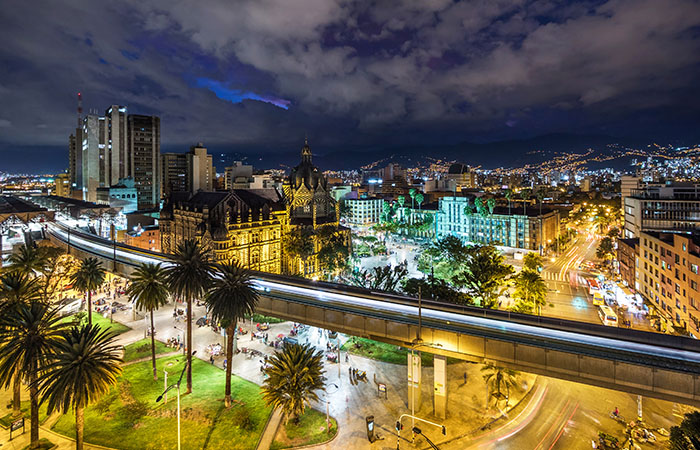

INFORMACION HISTORICA

- En el año 1541 llegó a estas tierras la primera expedición española dirigida por el Mariscal Jorge Robledo,
y luego, el 2 de marzo de 1616 en el lugar en donde hoy en día está ubicado el parque El Poblado, se fundó oficialmente
la ciudad de Medellín que originalmente adoptó el nombre de San Lorenzo de Aburrá.
- El mandatario Juan del Corral declara a Medellín ciudad en 1813, motivado por la importancia comercial que la ciudad había adquirido por ese entonces y la ciudad se convertí capital de Antioquia el 7 de abril de 1826, después la independencia de los españoles
- La Feria de las Flores es súper importante para Medellín ya que allí se realizan más de 140 eventos culturales, como: Exhibición Orquídeas y Flores, Festival Nacional de la Trova, Desfile de Autos Antiguos, parque cultural nocturno y desfile de silleteros.
- Medellín fue alguna vez una de las ciudades más peligrosas en el mundo, en la actualidad, sin embargo, es una de las ciudades con mayor crecimiento en el mundo gracias al optimismo y el trabajo duro de sus ciudadanos.
- Situada en el valle de Aburrá en los Andes, Medellín tiene una increíble arquitectura, con rascacielos edificios coloniales y casas coloridas. ¡Y se ve mucho mejor desde las alturas!
- Colombia es uno de los mayores exportadores de flores del mundo, y cada agosto celebra uno de los festivales más populares del país con conciertos, danza, desfiles de autos antiguos, competencias de flores y fuegos artificiales, la Feria de las Flores